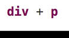
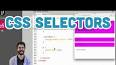

Приблизна кількість результатів: 240 000 (0,28 сек.)
W3Schools CSS Selectors Tutorial - YouTube
 10 вер. 2014 р. - Автор відео w3schools.com
Video tutorial from the CSS selectorschapter of the CSS tutorial on w3schools.
com http://www.w3schools.com ...
10 вер. 2014 р. - Автор відео w3schools.com
Video tutorial from the CSS selectorschapter of the CSS tutorial on w3schools.
com http://www.w3schools.com ...
CSS Selectors Tutorial - YouTube

31 бер. 2017 р. - Автор відео Greater Commons https://www.gr
eatercommons.com/ Learn how child selectors and sibling selectors work in this CSS TUTORIAL ...
8.9: CSS Selectors - p5.js Tutorial - YouTube

23 жовт. 2015 р. - Автор відео The Coding Train. This video
examines ids, classes, and tags as CSS selectors. Next video: https://youtu.be/s
SQPLIHIzmg ...